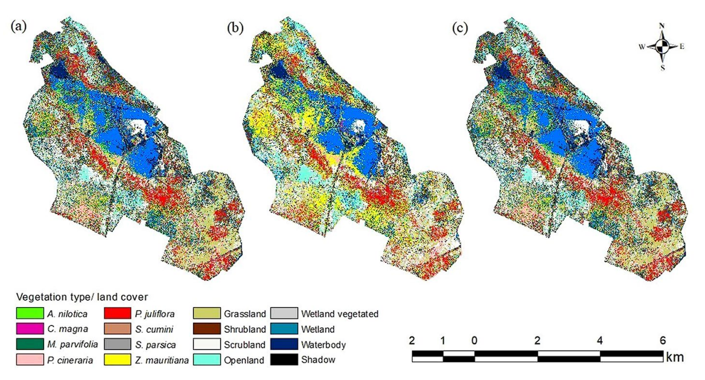

6 Classification
6.1 Summary of Classification
This week covers an fundamental yet complex concept in remote sensing - classification. Being an important part of remote sensing, image classification is a multi-step process which extracts features from images and sorting them into different distinct categories. These features can either be individual pixels or group of pixels, and are useful in understanding land use, urban planning, and other various uses. Image classification simplifies the raw spectral data into easily understood categories (like land use) which enables analysis of spatial patterns.
6.1.1 Types of Image Classifications
There are three main types of image classification:
- Supervised classification
- Unsupervised classification
- Object-Based classification (covered next week)
| Type | How it works | Advantages/Disadvantages | Example |
|---|---|---|---|
| Supervised Classification | The user provides a set of training samples for different known categories of interest; the classifier algorithms learns from these training datasets and classifies the entire image | Higher accuracy, higher user involvement in choosing training data, more time-consuming and more prone to overfitting, more control over classes (user defined) | Random Forest is a supervised classification algorithm which produces multiple decision trees, using a randomly subset of training samples and input features. The different trees contributes to the prediction of classes which prevents overfitting. |
| Unsupervised Classification | The classification is carried out without prior knowledge or training samples; the clustering algorithm clusters pixels based on similar spectral values and the analyst then attempts to assign the spectral classes into thematic classes that is useful for analysis. | Lower accuracy, lower user involvement, less time-consuming and less prone to overfitting, less control (user determine cluster count) | ISODATA is a unsupervised algorithm which calculates class means in given dataset, then performing an iterative clustering procedure based on minimum-distance to reclassify pixels until input threshold parameters are met. |
Some of the questions we have to consider when choosing different image classification techniques:
- What is the data type that is available? What resolution is it? (drone, satellite, multi-spectral?)
- What do we want to classify? For thematic mapping or object-based tasks?
- Is labelled data available?
- (edit from week 8 - apparently the lack of SAR labelled data makes it difficult to be used for classification but there are still benefits to SAR data compared to multi-spectral data - see week 8)
6.2 Applications
Image classification is an important methodology employed in vegetation studies as researchers are able to identify specific species of vegetation or structural types in a given area based on spectral signatures, and gain a better understanding of the spatial variations of vegetation covers (Zak and Cabido, 2002). This is crucial in efforts of nature conservation, agriculture monitoring and quatifiying ecosystem services.
Deval and Joshi (2022) in their vegetation study of Keoladeo National Park, India, developed a detailed vegetation cover map as the area is facing several management challenges stemming from climate change:
- Invasive species such as water hyacinths are threatening the ecology within the wetland reserve and needs to be removed but the geographical extent of these species are not known
- Long term water supply is lacking and currently relies on periodic rainfall which is reducing in recent years
Image classification would help build a comprehensive vegetation mapping of the National Park, building a species database for environmental conservation and management of the park. The authors used different image classification algorithms (Maximum Likelihood, Artificial Neural Network and Support Vector Machine) to classify vegetation and types of grasslands, each with their own strength in estimating different classes. The bootstrap method across 100 iterations is used to obtain overall accuracies, Kappa coefcient and respective width of confidence intervals for all three methods.

There are a few caveats of using image classification for such studies like vegetation identification though; Cingolani et al. (2004) highlights some issues when mapping vegetation using image classification techniques:
- Limited spatial resolution which means training sites of sufficient size might not be possible; this means smaller training sites must be used which increases variability in spectral signatures
- Mismatch between discrete units chosen by researchers and what is identifiable on the satellite images
This reinforces the key questions before we engage in image classification algorithms including the type of data we have and what do we want to classify - this helps justify the choices we make for image classification and avoid spending time revisiting issues encountered downstream during the research.
6.3 Reflections
This week covers the basics of classification, including the differences between supervised and unsupervised methods, its applications, and some more detailed explanation of machine learning algorithms like random forest and support vector machine. It took a bit to digest them especially the technical hyper-parameters gamma, and future reading on them made me a bit more uncertain about using an algorithm which I do not fully understand for remote sensing applications. For example, for random forest, we can choose max depth of trees, max no. of features, class weight and even quality of split. While using grid search can help us tune the hyperparameters, it is still important to understand what the parameters stand for instead of blindly tuning them which can result in overfitting due to certain parameters chosen or long computation time. Understanding the complexity of hyperparameters and how it influences classification in the area of interest can lead to improvement of methods like what Manfifard (2024) did - by introducing a new hyperparameter in modified Random Forest algorithm to better estimate crop yield instead of relying on traditional parameters.
With the introduction of LLMs like ChatGPT and cloud computing tools like GEE which can process large datasets quickly, it is easy to fall into a situation where we just use a range of tools (supervised, unsupervised, neural network, deepnet etc) to classify remote sensing data without fully understanding the underlying data characteristics, feature importance, or the appropriate model selection criteria. Accuracy is just one measure which does not mean much by itself - the interpretation of results in the context of study across different scales (spatial, temporal) and the implications of the findings is still the most important section of the research.
6.4 References
Cingolani, A.M., Renison, D., Zak, M.R. and Cabido, M.R., 2004. Mapping vegetation in a heterogeneous mountain rangeland using Landsat data: an alternative method to define and classify land-cover units. Remote sensing of environment, 92(1), pp.84-97.
Deval, K. and Joshi, P.K., 2022. Vegetation type and land cover mapping in a semi-arid heterogeneous forested wetland of India: Comparing image classification algorithms. Environment, Development and Sustainability, 24(3), pp.3947-3966.
Manafifard, M., 2024. A new hyperparameter to random forest: application of remote sensing in yield prediction. Earth Science Informatics, 17(1), pp.63-73.
Zak, M.R. and Cabido, M., 2002. Spatial patterns of the Chaco vegetation of central Argentina: Integration of remote sensing and phytosociology. Applied Vegetation Science, 5(2), pp.213-226.